User Management
User Management is used to manage all the available users of the tenant.
Document covers the the following aspects of the User Management
Users Grid
Users Grid lists all the active users, which are available for particular tenant to access.
Following lists the columns and usage in Users Grid
| Column Name | Description |
|---|---|
| Name | Name of the user |
| Role | Describes the role assigned to that particular user |
| Type | Indicates the current status of the user such as invited, Member etc . |
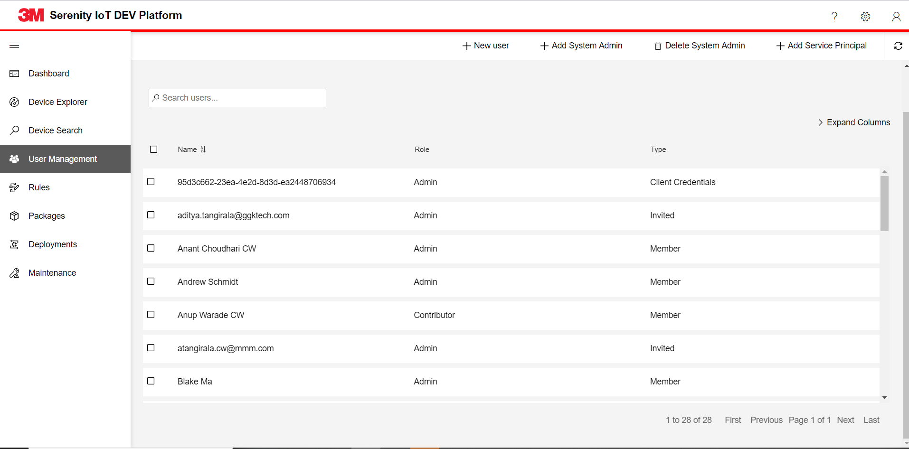
We have a search bar associated with the grid where we can search the grid data.
- 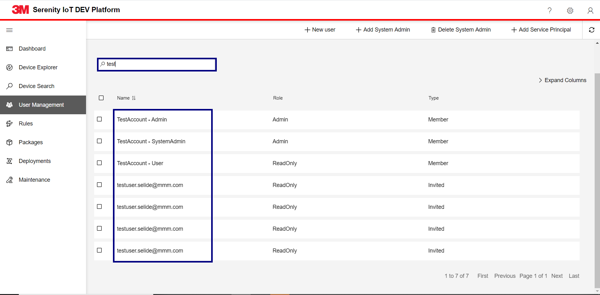
New User
This is used to add new user for the tenant.
Navigate to User Management page from Left menu
Click on +New User
Enter email address of user to be created
Select UserRole you wanted to assign.
- 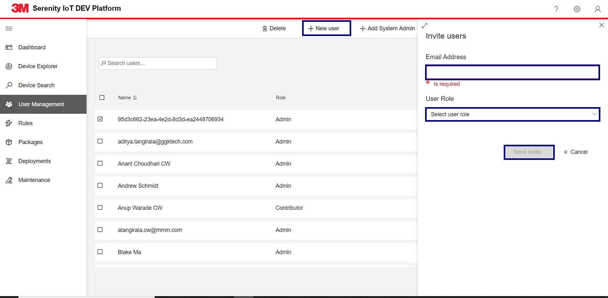
Click on Send Invite button sends an email to the user.
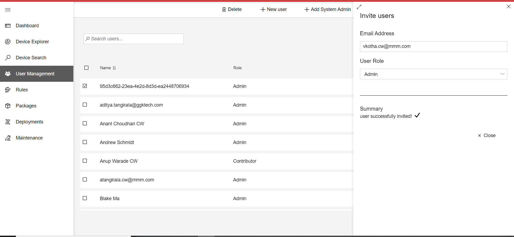
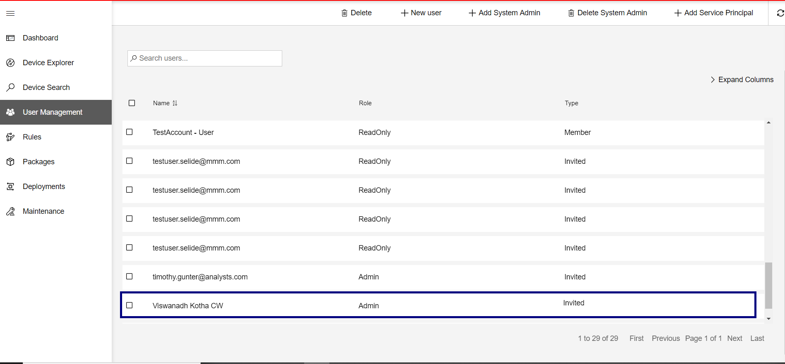
User then accepting the invite through the email received, will be added as member to the tenant and will be able to access the application.
Delete User
This is used to delete the user for the tenant.
Navigate to User Management page from Left menu
Select the user needs to be deleted.
Click on Delete button
- 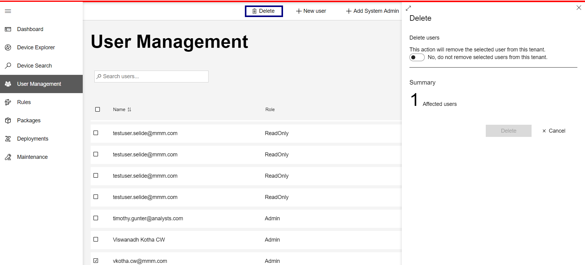
Activate the toggle button to delete the user and the Delete button will be activated.
- 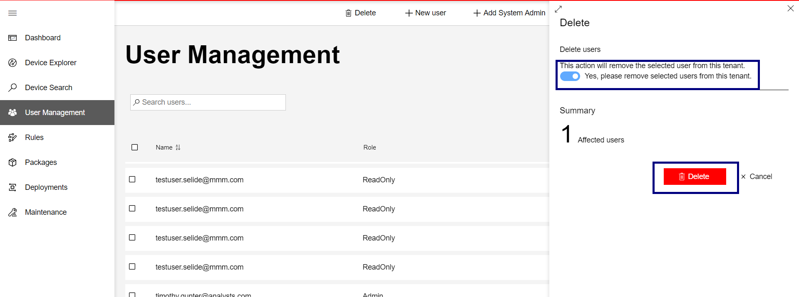
After deleting the user we see a message User Deleted Successfully
- 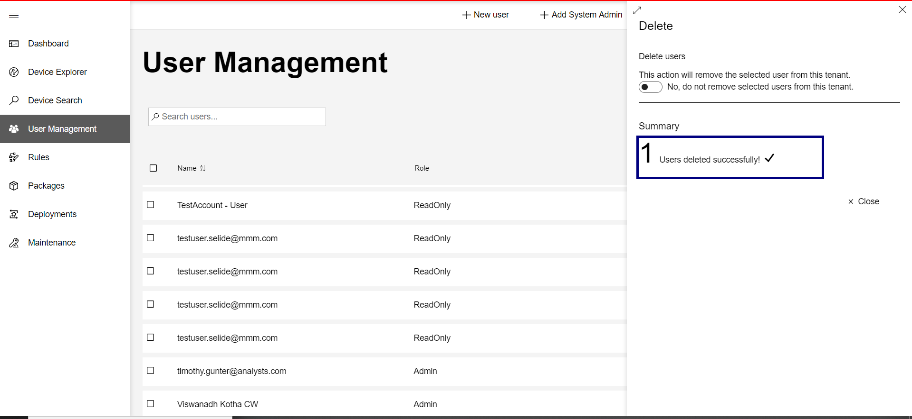
Add System Admin
This feature is used to add existing user in the system as system admin.
System admin is the user who has access across all the tenants.
When we are adding user as system admin, then the selected user will be added as user for all the tenants.
Navigate to User Management page from Left menu
Click on +Add System Admin
A flyout opens with a dropdown where we can see the list of existing users who are non-system admins.
- 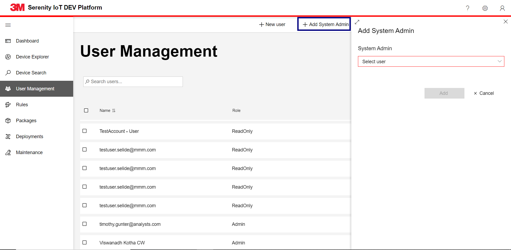
Select the user from the dropdown. After selecting Add button will be enabled.
- 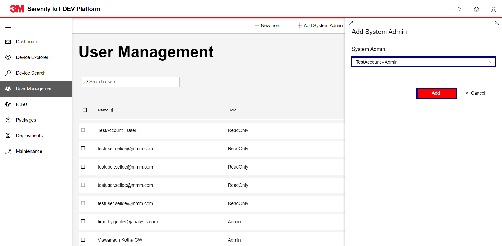
On clicking on add button, User will be added as system admin.
- 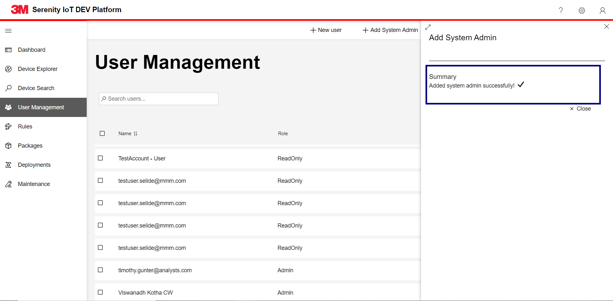
Delete System Admin
This feature is used to delete system admin from the system.
Navigate to User Management page from Left menu
Click on Delete System Admin
A flyout opens with a dropdown where we can see the list of existing system admins.
- 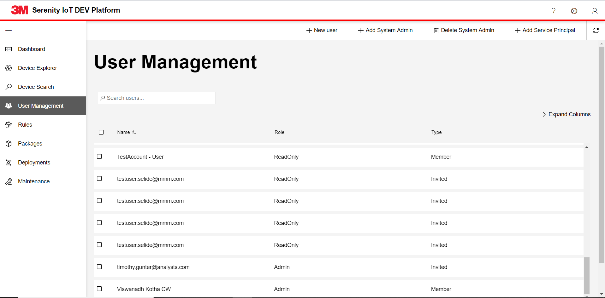
This is how flyout looks like.
- 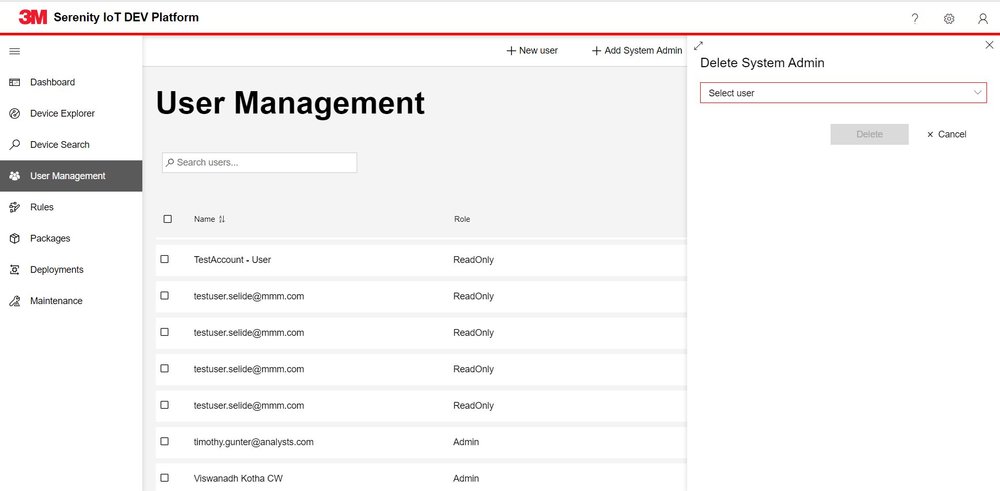
Select the user from the dropdown. After selecting Delete button will be enabled.
- 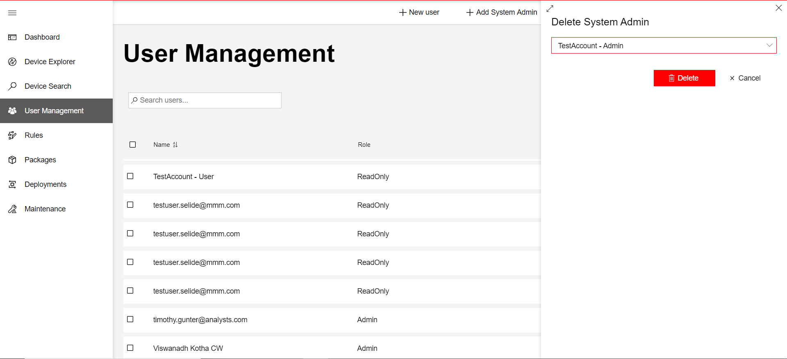
On clicking on Delete button, User will be deleted as system admin.
- 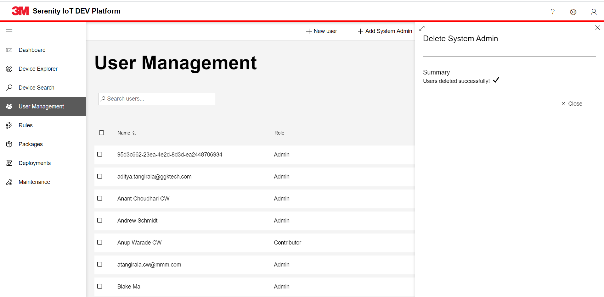
Add Service Principal
This feature is used to add user in the system using service principal Id.
Navigate to User Management page from Left menu
Click on +Add Service principal
A flyout opens to enter the service principal Id and select the user role.
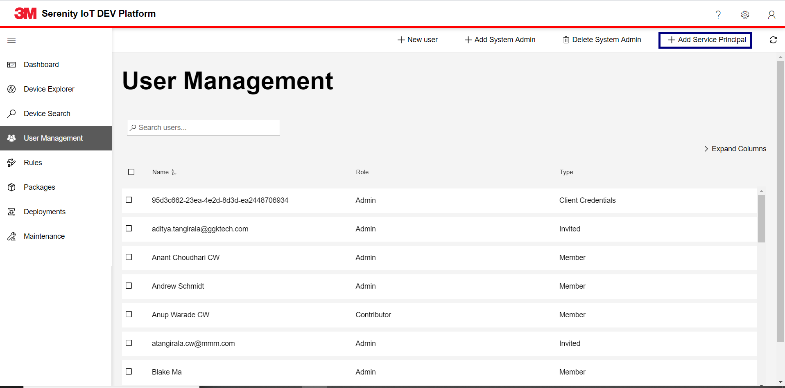
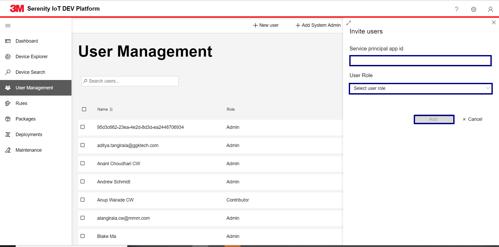
Enter the Service Principal Id and Select the user role from the dropdown. After selecting Add button will be enabled.
- 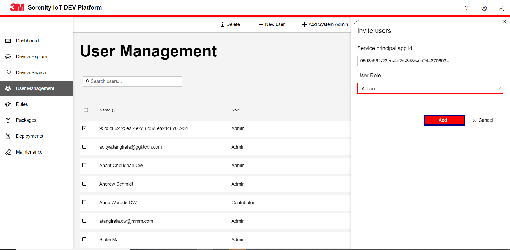
On clicking on add button, User will be added as system admin.
- 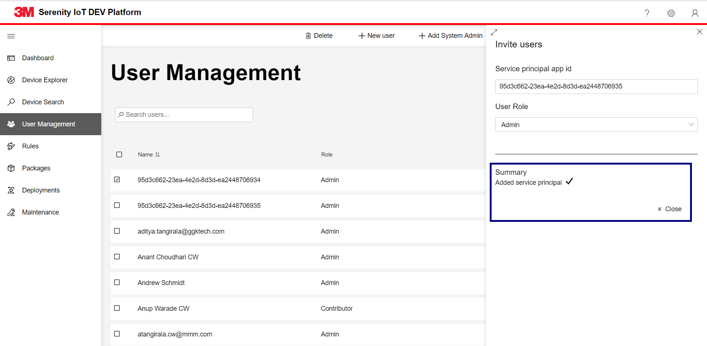
After adding the service princiapl user will be added with the type Client Credentials
- 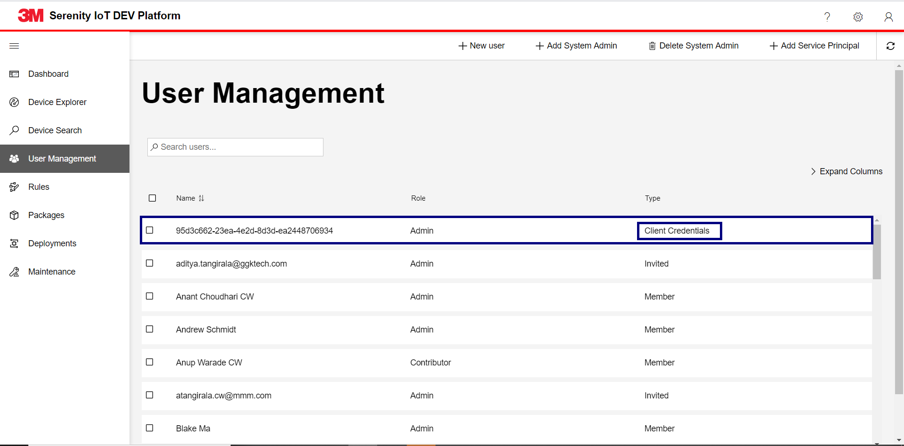